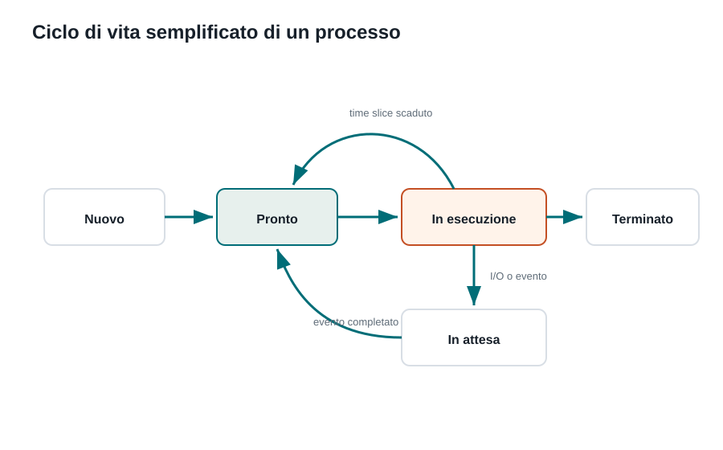

Capitoletto
Processi e risorse
Come il sistema operativo organizza i programmi in esecuzione, assegna la CPU e coordina risorse condivise.
Obiettivi della lezione
- Distinguere programma, processo e thread.
- Interpretare gli stati principali di un processo.
- Capire il ruolo dello scheduler.
- Riconoscere problemi come deadlock e starvation.
Programma, processo e thread
Un programma è un file che contiene istruzioni. Un processo è quel programma mentre viene eseguito. Il processo ha memoria, file aperti, risorse assegnate e un identificatore. Un thread è un flusso di esecuzione interno a un processo.
| Concetto | Idea chiave | Esempio |
|---|---|---|
| Programma | Istruzioni salvate su disco. | Il file del browser installato. |
| Processo | Programma in esecuzione. | Il browser aperto in questo momento. |
| Thread | Attività interna del processo. | Un thread per la pagina, uno per la rete, uno per l'interfaccia. |
Stati di un processo

Un processo non usa sempre la CPU. A volte è pronto ma aspetta il proprio turno; a volte è in esecuzione; a volte è bloccato perché aspetta un dato dal disco, dalla rete o da una periferica.
| Stato | Significato |
|---|---|
| Nuovo | Il processo è stato creato. |
| Pronto | Può partire appena riceve la CPU. |
| In esecuzione | Sta usando la CPU. |
| In attesa | Aspetta un evento o una risorsa. |
| Terminato | Ha finito il lavoro. |
Scheduler e time slice
Lo scheduler decide quale processo o thread deve usare la CPU. Nei sistemi interattivi l'obiettivo è mantenere il computer reattivo: anche con molte applicazioni aperte, il puntatore, la tastiera e le finestre devono rispondere rapidamente.
Spesso la CPU viene assegnata per piccoli intervalli di tempo chiamati time slice. Quando il tempo finisce, il sistema può sospendere un processo e farne avanzare un altro. L'utente percepisce esecuzione contemporanea, ma dietro c'è una rapida alternanza.
Risorse condivise
I processi usano risorse: CPU, memoria, file, stampanti, socket di rete, database. Se due processi accedono contemporaneamente alla stessa risorsa senza regole, possono nascere errori.
| Problema | Descrizione semplice | Esempio |
|---|---|---|
| Race condition | Il risultato dipende dall'ordine imprevedibile delle operazioni. | Due thread aumentano lo stesso contatore. |
| Deadlock | Due o più processi si bloccano aspettandosi a vicenda. | A possiede la stampante e vuole il file; B possiede il file e vuole la stampante. |
| Starvation | Un processo aspetta troppo perché altri hanno sempre la precedenza. | Processi a bassa priorità non ricevono mai CPU. |
Esercizi guidati
- Apri il gestore attività del tuo sistema e osserva processi e consumo CPU.
- Scegli un'applicazione e immagina almeno tre thread che potrebbe usare.
- Disegna un deadlock con due processi e due risorse.
- Spiega perché lo scheduler deve bilanciare reattività ed equità.
Domande con risposta semplice
Un programma e un processo sono la stessa cosa?
No. Il programma è salvato sul disco; il processo è il programma mentre sta funzionando.
Perché un processo va in attesa?
Perché aspetta qualcosa, per esempio dati dal disco, dalla rete o da una periferica.
Che cosa fa lo scheduler?
Decide quale processo o thread può usare la CPU in un certo momento.
Per ripassare
Prima osserva il diagramma, poi leggi la spiegazione. Se riesci a rispondere alle domande finali senza copiare le frasi del testo, hai capito davvero l'argomento.